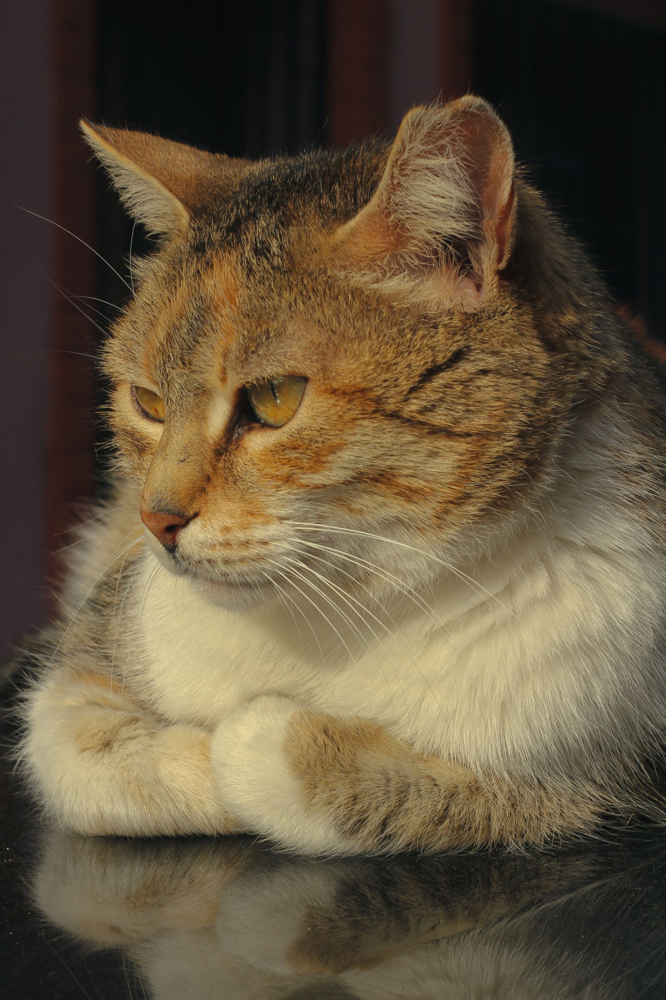

PARA TODAS AS PATAS. E TODOS OS AFETOS.Amar é natural.
Amar é natural.
Cuidar se aprende.
Uma vida mais feliz para o seu pet começa com pequenas descobertas. Vem aprender, tirar dúvidas e cuidar com a gente.
♡ Informação confiável. Carinho de verdade.

O melhor amigo merece
o melhor cuidado. ♡
vida boao melhor cuidado. ♡
é com pet!
CUIDADO COM CARINHO ✦DESCOBERTAS TODOS OS DIAS ✦MAIS TEMPO JUNTINHOS ✦
MENOS DÚVIDAS, MAIS CUIDADO
Uma ajudinha na rotina.
Seis ferramentas para a vida real.
Grátis, simples e sem cadastro.
01
Idade do pet
Quantos anos de gente tem o seu melhor amigo?
Usar ferramenta ↗02Porção de ração
Uma estimativa para começar a conversa com o vet.
Usar ferramenta ↗03Pode comer?
Consulte alimentos que merecem atenção.
Usar ferramenta ↗04Agenda de cuidados
Transforme a próxima consulta em um lembrete.
Usar ferramenta ↗05Gastos do pet
Planeje o mês sem sustos no orçamento.
Usar ferramenta ↗06Nomes para pets
Encontre um nome com a cara do seu bichinho.
Usar ferramenta ↗INFORMAÇÃO QUE FAZ BEMSeu próximo cuidado
✦ Guias com fontes consultáveisSeu próximo cuidado
começa aqui.
SAÚDEVacina antirrábica: cuidado que protege toda a família
O que conferir na carteirinha e como se preparar para a vacinação.
Ler o guia ↗ ALIMENTAÇÃO
ALIMENTAÇÃORação na medida: comece pelo rótulo, ajuste com o veterinário
Entenda por que uma calculadora é um ponto de partida.
Ler o guia ↗
SEGURANÇAChocolate, uva e outros alimentos que ficam fora do potinho
Uma consulta rápida pode evitar um acidente em casa.
Ler o guia ↗BEM-ESTARSeu cão está no peso adequado? Observe além da balança
Costelas e cintura ajudam a perceber mudanças.
Ler o guia ↗CURIOSIDADES
Idade de cachorro e gato: por que multiplicar por sete não resolve
Uma equivalência divertida, com limites que vale conhecer.
Ler o guia ↗